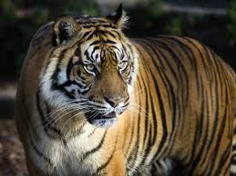
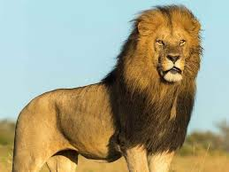
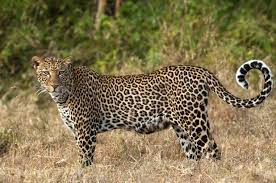
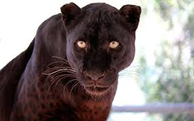
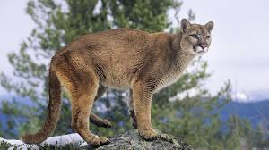
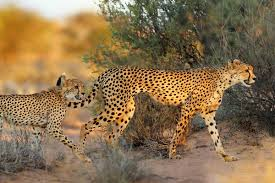
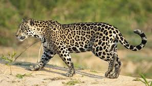

| Big Cat | Description | Images |
|---|---|---|
| Tiger | The tiger is the largest of the big cats and has a pattern of dark vertical stripes on reddish-orange fur with a lighter underside |  |
| Lion | The lion is a big cat easily identifiable by the manes the males possess and mostly dwell in savannas |  |
| Leopard | The leopard has a relativley slim build similar to a small jaguar and like the jaguar has patterns on its body but they are smaller denser and missing a center dot |  |
| Black Panther | The black panther isnt a truly seperate species of big cat but is black colored variant of the leopard and jaguar similar to albinos relationship to parent species |  |
| Cougar | The cougar is usually mono-colored and has figure similar to jaguar and are also called pumas and mountain lions |  |
| Cheetah | The cheetah is has a slender build, spotted coat, small round head, black tear-like streaks on the face, long thin legs and a long spotted tail and stggering speed |  |
| Jaguar | As stated above this cat is like a bigger sturdier leopard with bigger spots that also have a center dot and live in the americas |  |